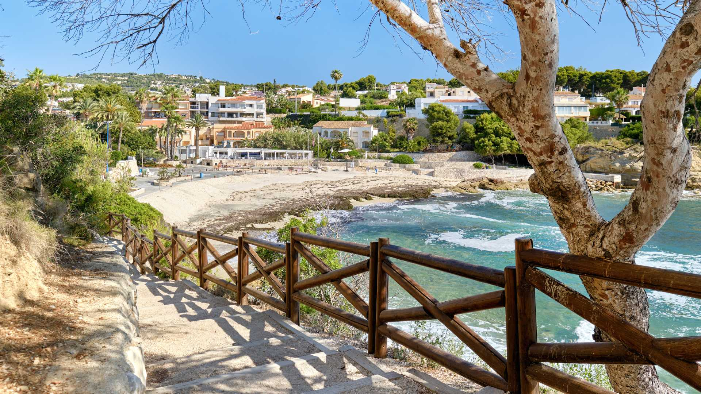
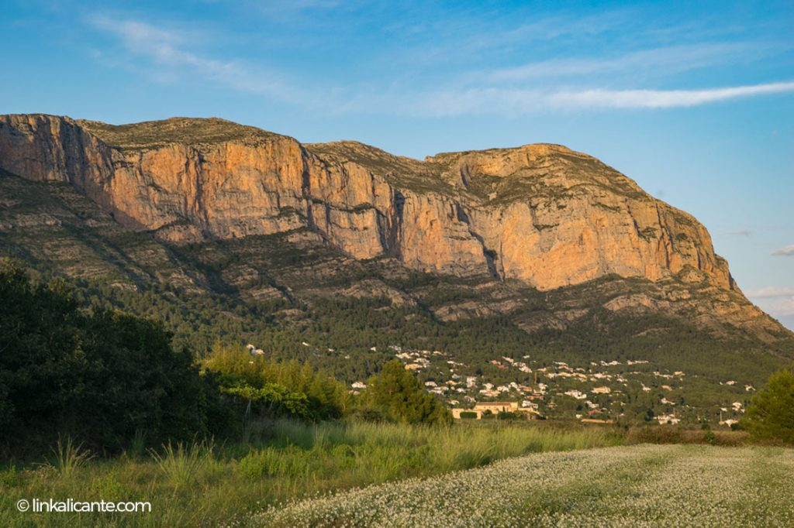
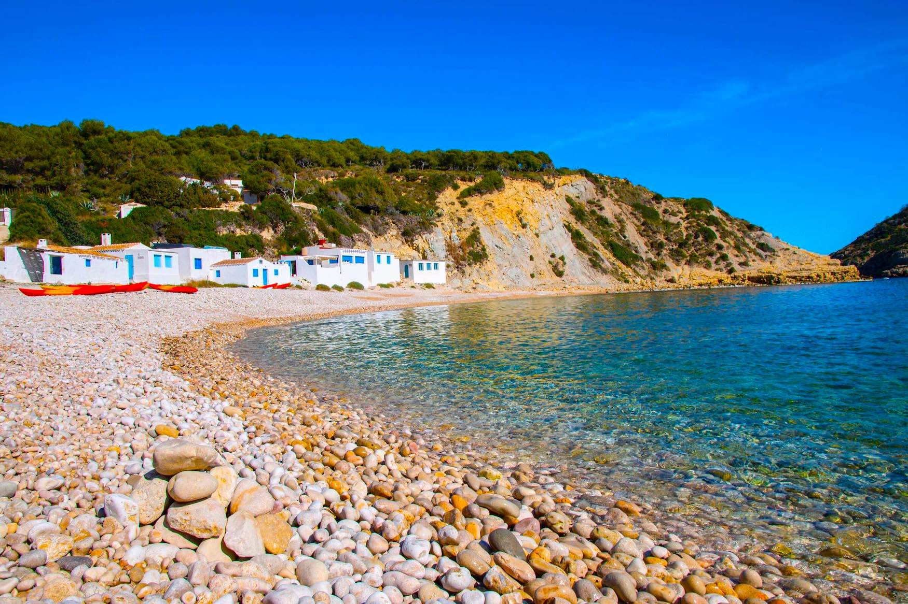
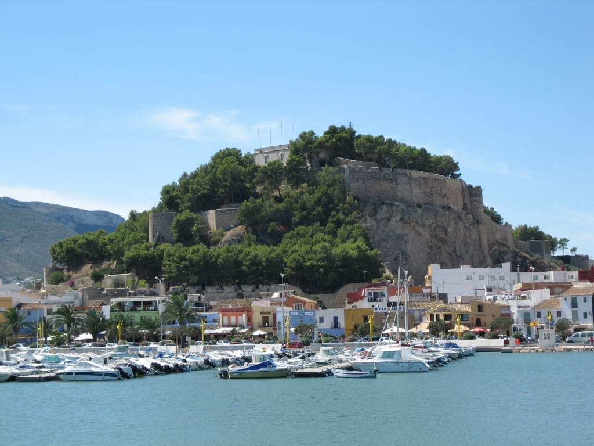
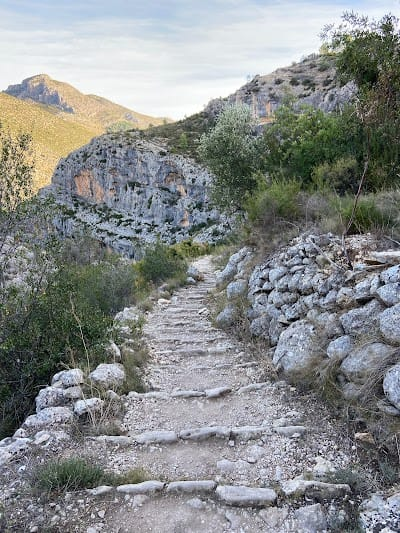
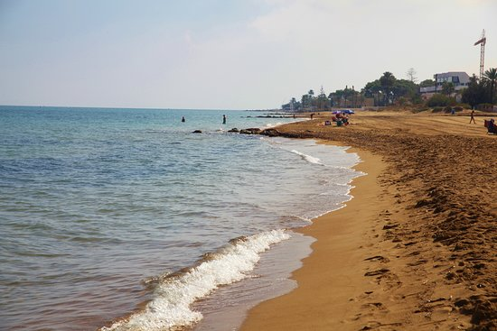

La Marina Alta es una comarca situada en la provincia de Alicante, en la Comunidad Valenciana, España. Esta región se encuentra en la conocida Costa Blanca, ofreciendo una combinación única de paisajes de montaña, playas de aguas cristalinas, y pueblos encantadores. Su clima mediterráneo suave, con inviernos templados y veranos cálidos, hace de esta zona un destino popular tanto para visitantes como para residentes.
Acerca de La Marina Alta

Lugares de interés

Parque Natural del Montgó
Ubicado entre los municipios de Dénia y Jávea, el Parque Natural del Montgó es un impresionante macizo montañoso que alcanza los 753 metros de altitud. Ofrece rutas de senderismo con vistas panorámicas del Mediterráneo y es hogar de una rica biodiversidad. Además, desde su cima se pueden ver, en días claros, las islas Baleares.

Las calas de Jávea
Jávea es famosa por sus calas, como Cala Granadella y Cala Portitxol, conocidas por sus aguas turquesas y rodeadas de acantilados y pinos. Son ideales para el buceo, el snorkel y la fotografía, gracias a sus fondos marinos y su belleza natural.

Castillo de Dénia
Situado en el centro de Dénia, este castillo histórico ofrece vistas increíbles de la ciudad y el mar. Fue construido entre los siglos XI y XII durante la dominación árabe y es un símbolo cultural importante de la región. Hoy en día, alberga el Museo Arqueológico, que narra la historia de Dénia y sus alrededores.

Vall de Laguar y Ruta de los 6.000 Escalones
Para los amantes del senderismo, la Ruta de los 6.000 Escalones en la Vall de Laguar es una de las más famosas. Este recorrido atraviesa un paisaje montañoso impresionante, con numerosos escalones tallados en la roca y vistas espectaculares del valle.

Playa de Les Marines
En Dénia, la Playa de Les Marines es ideal para disfrutar de la costa. Es una playa amplia y de arena dorada, perfecta para familias y para actividades acuáticas como el windsurf y el paddle surf.
Gastronomía de la Marina Alta
Arroz a banda
Un arroz seco cocido en caldo de pescado, típico de la zona, y generalmente acompañado con alioli.
Cruet de peix
Guiso de pescado fresco con patatas y verduras, un plato tradicional en los pueblos pesqueros.
Cocas
Una especie de pan plano que se cubre con ingredientes como tomate, pimiento, atún, o embutidos locales.
Mistela
Un vino dulce característico, hecho de uvas moscatel, que se sirve habitualmente como digestivo.